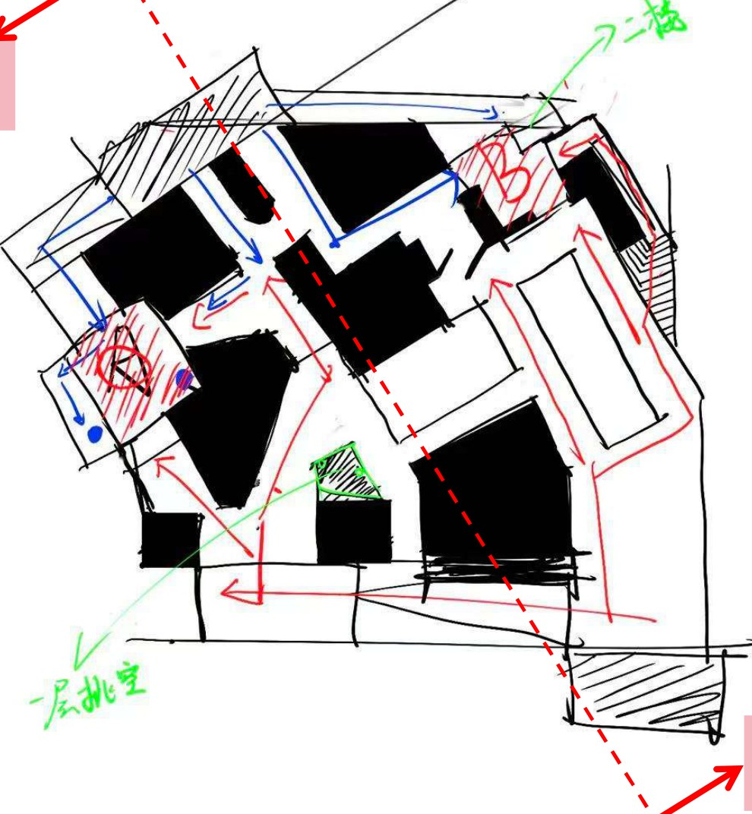
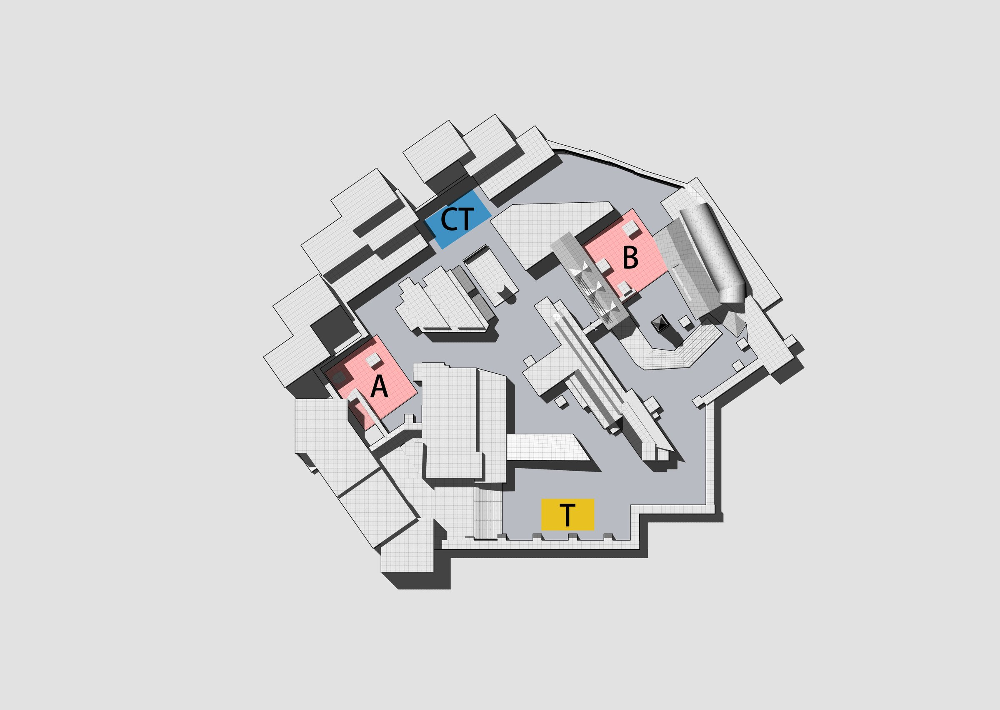
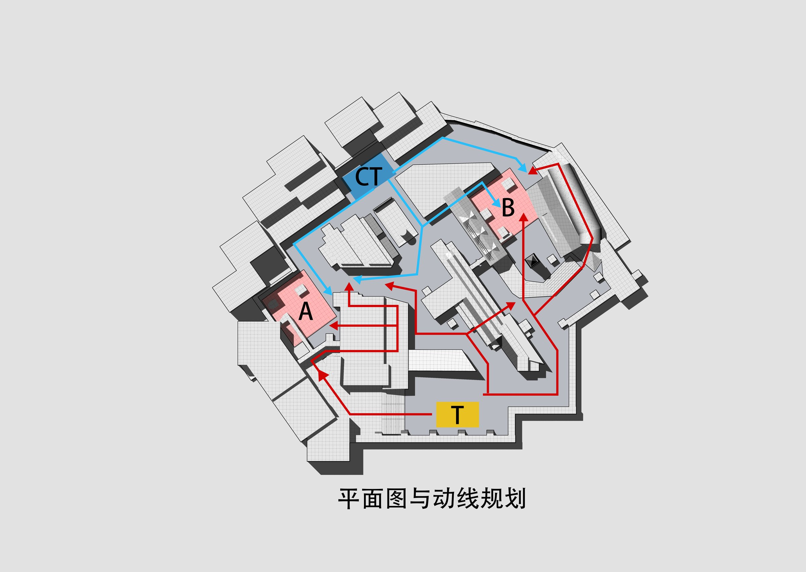
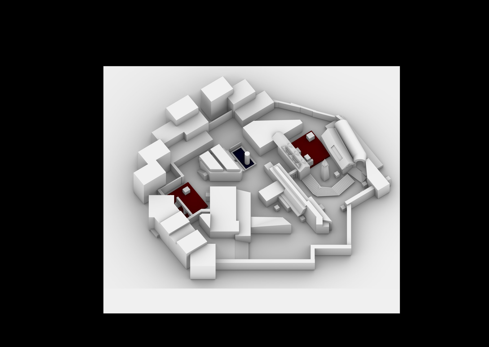

A 点截图
节点 A · A 点压缩空间
把 A 点的进攻路径做成 T 的瓶颈
A 点位于传统城区一侧，进攻路径穿过紧凑的室内空间。 狭窄通道天然限制 T 方展开队形，把强攻变成逐段推进。
为什么这么做 v1 测试里 T 的动线过于顺畅，rush 成本太低。用紧凑室内空间人为制造瓶颈， 让进攻 A 点必须付出时间与道具成本。
$ CS 炸弹拆除模式 · 双包点白盒 · 5v5 竞技
新旧交界，空间驱动玩法。让传统城区的紧凑尺度与现代建筑的开放形态形成对比， 使建筑风格不止承担视觉表达，同时参与塑造玩家的移动路线与战斗节奏。
> 引擎工程开源： github.com/JingyeLi-Portfolio/Borgo-FPS-Level-Design
Borgo 的设计灵感来自欧洲传统城区与现代城市开发的交界区域。 Borgo 一词源自意大利语，与英语的自治市镇、德语 Burg、法语 bourg 同源， 现在通常指「老城墙外生长出来的新城镇」——这个语义本身就是一次空间新旧交替。
我把这种「交界」直接做成了玩法：传统建筑提供紧凑的空间尺度， 现代建筑提供开放的空间形态。两种空间风格分别落在 A、B 两个包点， 让玩家在进攻 A 点和进攻 B 点时，面对的是两套完全不同的交战逻辑。
草图阶段只考虑空间的节奏与尺度；游戏均衡性的考量，放在基本空间形态形成之后。
① 保证 AB 两点空间风格的差异；② 避免过大尺度的线性空间；③ 强化两点之间的链接，为 CT 回防与 T 转点预留空间。

紧凑空间负责「制造冲突」，开放空间负责「释放节奏」。



动线设计的理论支点是「消极空间」——芦原义信在《外部空间设计》中提出， 指建筑、城市或视觉设计中未被主体功能占据的「留白」区域，如建筑间隙、高架桥下。 我认为消极空间在关卡里具有心理驱动性：它本身没有功能， 但玩家会本能地用它来判断「哪里能走、哪里危险」。
这张图的中路就是一个被刻意放大的消极空间。它不是任何一方的必争之地， 但它的存在让 T 方始终握着「夹 A 或夹 B」的选项——防守方不得不分兵关注它， 进攻方围绕它组织转点。
战斗空间不是单纯堆掩体堆出来的，而是通过视线、遮挡、空间尺度与路线关系， 共同控制玩家的暴露程度。
压缩空间
近距离交战 · 战术性打法
开放空间
中远距离对枪 · 更短遭遇时间
建筑开口
视线控制 · 信息投放
空间节点
玩家决策点 · 转点与包夹
中路有两条路线，转点成本相对低，包夹方式丰富；在弥补信息不足的同时，除去一个自由人之外也能组织起强劲的进攻。
采用 2-1-2 防守模式保持均衡；弱势区域可以增援，人员分散、信息优势明显；回防路线充足、回防时间短。
A 点位于传统城区一侧，进攻路径穿过紧凑的室内空间。 狭窄通道天然限制 T 方展开队形，把强攻变成逐段推进。
为什么这么做 v1 测试里 T 的动线过于顺畅，rush 成本太低。用紧凑室内空间人为制造瓶颈， 让进攻 A 点必须付出时间与道具成本。
B 点位于现代建筑一侧，路径开放、视野通透。 T 方接近包点的速度很快，但全程暴露在 CT 的中远距离枪线下。
为什么这么做 与 A 点形成对照：A 是「慢但相对安全」，B 是「快但全程暴露」。 两种节奏没有绝对优劣，进攻方要根据回合局势做选择。
中路本身不是必争之地，但它连接 AB 两点、且有两条分支路线。 谁控制中路，谁就拥有转点与包夹的主动权。
为什么这么做 消极空间的心理驱动性让双方都意识到它的价值，但任何一方都不愿为其投入全部兵力—— 这种「想做又不敢做满」的张力，正是中场博弈的来源。
从「建筑空间」走向「游戏关卡」时暴露的两类问题。
初版从空间设计出发，T 的进攻路径太顺，导致进攻时间过短——建筑学视角下「好用」的动线，在竞技关卡里反而失衡。
在 A 点利用紧凑室内空间设置 T 的瓶颈点，拖慢推进速度；在 B 点利用开放空间设置暴露点，让提速必须付出代价。两条路径从此各有风险。
建筑构件与消极空间按真实建筑尺度做，结果开放区过于宏大，玩家找不到重点。
调整建筑的比例与构件尺度，把消极空间重新用在玩家的空间驱动性上，而不是当作单纯的形式表达——空间必须先好玩，再好看。
白盒走位与两条进攻路径的实测。